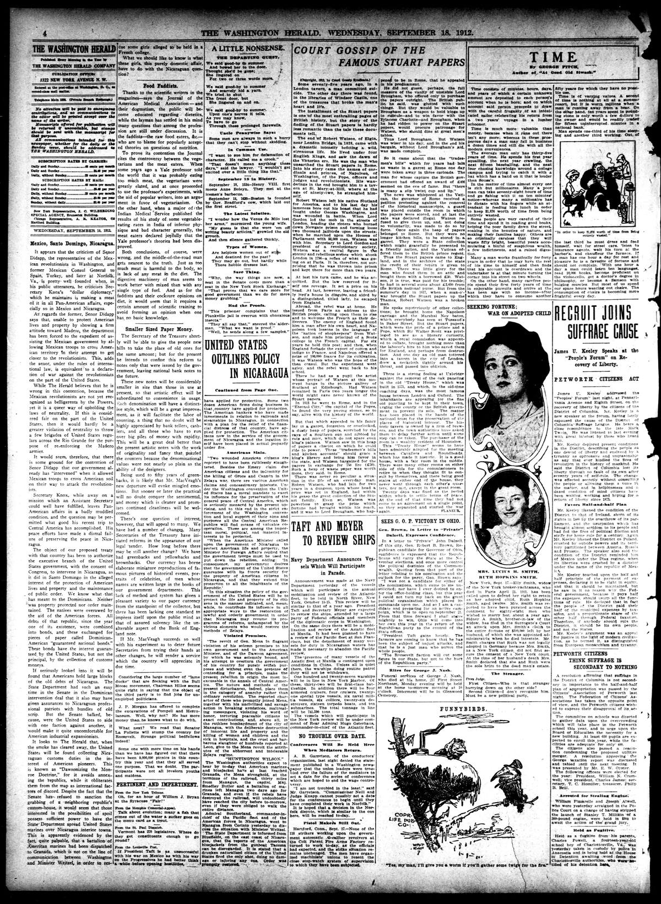

Mexico, Santo Domingo, Nicaragua.
https://www.loc.gov/resource/sn83045433/1912-09-18/ed-1/?sp=4

See the original pageVer la página original
It appears that the criticism of Senor Didapp, the representative of the Mexican revolutionists in Washington, and former Mexican Consul General to Spain, Turkey, and later at Norfolk, Va., is pretty well founded when, in his public utterances, he criticises Secretary Knox’s “dollar diplomacy,” which he maintains is making a mess of it in all Pan-American affairs, especially so in Mexico and Nicaragua.
As regards the former, Senor Didapp says that, unable to protect American lives and property by showing a firm attitude toward Madero, the department has been forced to the expedient of assisting the Mexican government by allowing Mexican troops to cross American territory in their attempt to get closer to the revolutionists. This, adds the senor, under the rules of international law, is equivalent to a declaration of war against the revolutionists on the part of the United States.
While The Herald believes that he is wrong in this contention, because the Mexican revolutionists are not yet recognized as belligerents by the Powers, yet it is a queer way of upholding the laws of neutrality. If this is considered fair on the part of the United States, then it would hardly be a greater violation of neutrality to throw a few brigades of United States regulars across the Rio Grande for the purpose of re-enforcing the Madero armies.
It would seem, therefore, that there is some ground for the contention of Senor Didapp that our government already has “intervened” when it allowed Mexican troops to cross American soil on their way to attack the revolutionists.
Secretary Knox, while away on a mission which an Assistant Secretary could well have fulfilled, leaves Pan-American affairs in a badly muddled condition, and the question may be permitted what good his recent trip to Central America has accomplished. His peace efforts have made a dismal failure of preserving the peace in Nicaragua.
The object of our proposed treaty with that country has been to authorize the executive branch of the United States government, with the consent of Congress, to intervene in Nicaragua, as it did in Santo Domingo in the alleged interest of the protection of American lives and property and the maintenance of public order. We know what that has meant to the Dominicans. Neither was property protected nor order maintained. The natives were overawed by the aid of the American forces. All debts of that republic, since the year one of its existence, were combined into bonds, and these exchanged for pieces of paper called Dominican-American “guaranteed national bonds.” These bonds have the interest guaranteed by the United States, but not the principal, by the collection of customs moneys.
If seriously looked into it will be found that Americans hold large blocks of the old debts of Nicaragua. The State Department had such an easy time in the Senate in the Dominican intervention deal that it also may have given assurances to Nicaraguan professional patriots with bundles of old scrip. But the Senate balked, because, were the United States to side with one faction against another, it would make it quite uncomfortable for American industrial expansionists.
It looks to The Herald that, when the smoke has cleared away, the United States will be found collecting Nicaraguan customs duties in the interest of American pioneers. This is known as “Dawsonizing the Monroe Doctrine,” for it avoids annexing the republics, while it obliterates them from the map as international factors of discord. Despite the fact that the Senate has refused to sanction the grabbing of a neighboring republic's custom-house, it would seem that those interested in the possibilities of spoil possess sufficient power to have the State Department spread United States marines over Nicaragua interior towns. This is apparently evidenced by the fact, quite palpable, that a battalion of American marines had been dispatched to Granada, which is not on the line of communication between Washington and Minister Weitzel, in order to rescue some girls alleged to be held in a French college.
What we should like to know is what these girls, this purely domestic affair, have to do with the Nicaraguan question?
How to cite this articleCómo citar este artículo
The Washington Herald. (1912). Washington, D.C., September 18, 191218 de septiembre de 1912. DR in the American PressRD en la Prensa Norteamericana. Library of Congress, Chronicling America: https://www.loc.gov/resource/sn83045433/1912-09-18/ed-1/?sp=4
ReferencesReferencias
Library of Congress, Chronicling America: The Washington Herald, September 18, 191218 de septiembre de 1912.
Send an observationEnviar una observación
Does this article connect with your family, your town, or something you know? Did we get something wrong? Write to us. Observations go to the editor's inbox and are read by a person.¿Este artículo conecta con su familia, su pueblo o algo que usted conoce? ¿Nos equivocamos en algo? Escríbanos. Las observaciones llegan al buzón del editor y las lee una persona.
Send observationEnviar observación